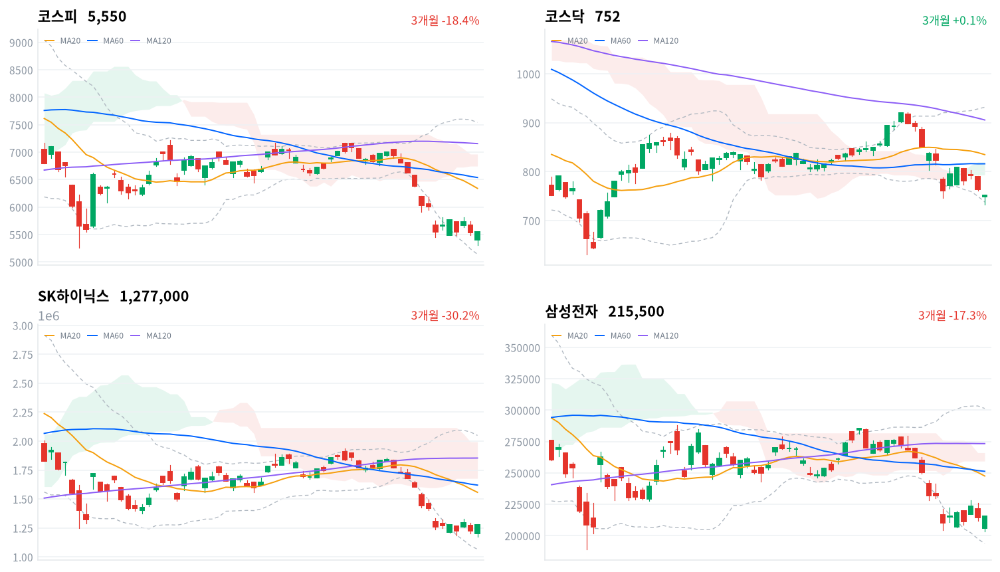

미국 반도체주 급락에 2% 넘게 낮게 출발한 코스피는 장중 5,306까지 밀렸다가, 솔리다임 상장 검토 중단을 공시한 SK하이닉스가 오후에 오르면서 그날 고가에서 마감했다. 코스닥은 반등하지 못하고 1.62% 내렸다.
오늘 반전은 매수 주체가 돌아온 신호가 아니라 SK하이닉스 한 종목의 재료에 기관 매수가 겹친 결과로 판단한다. 외국인이 다시 사는지는 10월 26일 수급에서 확인한다.
외국인은 코스피에서 9,778억원을 순매도했고, 기관이 8,675억원을 순매수해 그 물량을 받았다(당일 잠정). 지수를 되돌린 종목은 장 시작 전 솔리다임 프리IPO·IPO 검토 중단을 공시한 SK하이닉스(+4.42%)였다. 삼성전자는 0.47% 오르는 데 그쳤다.
장 마감 뒤 보도는 솔리다임 소식에 반도체 대형주 중심으로 투자심리가 살아나 「막판 대반전」이 나왔다고 설명한다. 반등의 계기가 SK하이닉스 공시였다는 데에는 동의한다. 다만 그 설명은 누가 샀는지를 확인하지 않았다. 외국인은 3거래일 만에 순매도로 돌아섰고, 반도체 업종에서 오른 종목은 173개 가운데 52개뿐이었다. 그래서 오늘 반전은 반도체 전반의 심리 회복보다 지수 비중 1위 종목의 고유 재료에 기관 매수가 겹친 결과로 본다.
한국 반도체 지수가 미국 반도체 급락을 따라가지 않은 것은 SK하이닉스가 자기 재료로 버틴 결과이고, 반도체 업종 전체의 이익 전망에 대한 평가가 바뀐 것은 아니라고 판단한다. SK하이닉스의 삼성전자 대비 초과수익은 지배구조 할인이 풀리는 재평가의 시작으로 본다. 코스피 선행 주가수익비율이 약 4배까지 내려왔다는 보도처럼, 가격 매력에 기관이 저가 매수에 나섰고 미국 반도체가 안정되면 외국인도 따라온다는 설명도 가능하다. 시장 전체 투자자별 순매수만으로는 기관이 SK하이닉스를 샀는지 알 수 없어, 기관 순매수와 SK하이닉스 반등이 같은 날 나왔다는 사실까지가 근거다. 두 설명은 10월 26일 외국인 순매수 방향과 코스피가 10월 21일 종가 5,736을 되찾는지로 확인한다.
하루 반전만으로 매수 주체가 돌아왔다고 보기는 이르고, 새로 제안할 상품은 없다. 미국 반도체 업종에 옮겨 읽을 것은 한국 반도체가 버텼다는 사실보다 그 힘이 한 종목에 몰렸다는 점이다. 가장 가까운 확인은 10월 26일 외국인 코스피 수급이다.
코스피가 10월 23일 기준 일목 전환선 5,752 위에서 마감하면, 오늘 반전을 SK하이닉스 한 종목의 재료가 만든 하루짜리로 본 판단을 철회하고 매수 주체가 돌아왔다고 본다. 이 선은 오늘 종가보다 약 3.6% 위로, 10월 21일 종가와 거의 같은 자리다. 아래로는 오늘 장중 저점이 새 20일 저점(5,306)이 됐다.
출처: 헤럴드경제, 이데일리, 뉴스1
직전 10월 22일 미국 세션은 나스닥이 2.60%, S&P500이 1.21% 내렸고 다우는 0.02% 올라 보합이었다. 메타가 3분기 실적과 함께 자본지출 전망을 높이자 주가가 약 7% 떨어졌고, 필라델피아반도체지수는 6% 넘게 내렸다는 보도가 나왔다. 오늘 아시아는 엇갈렸다. 닛케이(-0.34%)와 대만가권(-1.81%, 10월 22일 값)은 내렸고 항셍(+0.69%)과 상해종합(+0.89%)은 올랐다. 네 지수 평균은 -0.14%였고, 코스피는 이보다 0.44%포인트 강했다.
코스피는 전일 종가(5,534)보다 2.4% 낮은 5,403에서 출발했다. SK하이닉스는 장 시작 전 공시로 손자회사 솔리다임의 프리IPO·IPO 검토 중단을 밝혔다. 한국 정규장 동안 미국 선물은 더 밀리지 않았다(S&P500 선물 +0.02%, 나스닥 선물 +0.30%).
코스피는 하루 범위(244포인트)의 맨 위, 그날 고가에서 마감했다. 장중 저점은 전일 종가보다 4.12% 낮은 자리였다. 코스닥은 저점 733에서 올라 고가(753) 바로 아래인 752에서 끝났지만 전일보다는 내렸다. 원/달러는 장중 오름세였다.
반전을 이끈 것은 SK하이닉스와 모회사 SK스퀘어였고, 외국인은 팔았고 기관은 샀다. 2차전지·방산·정유는 약세가 이어졌다. 시간외 거래 자료는 없어 장 마감 뒤 흐름은 확인하지 못했다.
출처: TradingKey, 파이낸셜뉴스, 머니투데이, 한국일보
코스피는 0.30% 오른 5,550, 코스닥은 1.62% 내린 752로 마감해 두 지수의 하루 수익률이 1.92%포인트 벌어졌다. 반등은 코스피 대형주에 한정됐고, 코스닥은 장중 저점 733으로 20일 저점을 새로 썼다.
| 지수 | 종가 | 등락률 | 시가 | 고가 | 저가 | 전일 종가 |
|---|---|---|---|---|---|---|
| 코스피 | 5,550.30 | +0.30% | 5,403.17 | 5,550.30 | 5,305.98 | 5,533.77 |
| 코스닥 | 751.69 | -1.62% | 748.32 | 753.02 | 732.87 | 764.10 |
반등이 시작된 것은 오후다. 코스피는 오전에는 낙폭을 크게 줄이지 못하다가 13시 이후 꾸준히 올라 마감 직전에 고가를 썼다. SK하이닉스가 장중 117만1천원 저점에서 오후 상승으로 돌아선 시점과 겹쳐, 이 반등은 장 초반 저가 매수보다 오후의 종목 재료가 만든 것으로 본다.
| 주체 | 순매수(억원) |
|---|---|
| 개인 | +392 |
| 외국인 | -9,778 |
| 기관 | +8,675 |
| 주체 | 순매수(억원) |
|---|---|
| 개인 | +654 |
| 외국인 | -417 |
| 기관 | -269 |
지수 방향과 같은 쪽에 선 것은 기관이었다. 기관은 코스피에서 8,675억원을 순매수해(전일 4,599억원 순매도, 당일 잠정) 3거래일 연속 순매도를 끝냈고, 규모는 10월 15일 이후 가장 컸다. 외국인은 9,778억원을 순매도해(전일 505억원 순매수) 2거래일 순매수 뒤 매도로 돌아섰다. 매도 규모 역시 10월 15일 이후 가장 크다. 개인은 392억원 순매수에 그쳤다. 전일 외국인 값은 오늘 다시 받은 잠정치로, 어제 글의 653억원보다 작다.
코스닥에서는 외국인이 417억원을 순매도해 6거래일 연속 팔았고, 기관(269억원 순매도)도 함께 팔아 개인(654억원 순매수)이 받았다. 코스피 반등이 코스닥으로 번지지 않은 날이지만 매도 규모는 전일보다 줄었다.
장중 누적 수급과 프로그램 매매는 받을 수 있는 자료가 없어 싣지 않는다.
| 순위 | 종목/ETF | 구분 | 거래대금 | 비고 |
|---|---|---|---|---|
| 1 | SK하이닉스 | 개별주 | 4.51조원 | - |
| 2 | 삼성전자 | 개별주 | 3.34조원 | - |
| 3 | 반도체 테마 ETF | 테마·롱 | 1.91조원 | 29종 합산 |
| 4 | 삼성전기 | 개별주 | 0.82조원 | - |
| 5 | KODEX CD금리액티브(합성) | 단기금리·현금성 | 0.77조원 | - |
| 6 | 삼성E&A | 개별주 | 0.77조원 | - |
| 7 | SK스퀘어 | 개별주 | 0.46조원 | - |
| 8 | 2차전지 테마 ETF | 테마·롱 | 0.38조원 | 14종 합산 |
| 9 | 삼성전자우 | 개별주 | 0.37조원 | - |
| 10 | 삼성SDI | 개별주 | 0.31조원 | - |
단위 백만원 원본을 조 단위로 환산했다. 같은 기초자산 ETF는 방향별로, 같은 테마 섹터 ETF는 테마별로 묶고 지수·해외 ETF는 제외했다.
거래는 SK하이닉스 한 종목에 가장 많이 몰렸다. SK하이닉스 거래대금(4.51조원)은 삼성전자(3.34조원)를 1조원 넘게 앞섰고, 모회사 SK스퀘어(0.46조원)도 7위에 올라 솔리다임 재료가 거래의 중심이었다. 반도체 테마 ETF 29종 합산은 1.91조원으로 3위였지만, 거래대금이 몰린 반도체 ETF의 가격은 SK하이닉스만큼 오르지 않았다. 삼성E&A는 실적 발표 뒤 2거래일째 상위권을 지켰고, 2차전지 테마 ETF 14종 합산과 삼성SDI도 10위 안에 들었다.
반도체의 상승은 좁았다. 반도체와반도체장비 업종은 1.27% 올랐지만 173종목 가운데 52종목(30%)만 올랐고, 대표 ETF 기준 반도체 섹터는 오히려 0.66% 내렸다. 두 대형주 밖의 반도체 종목은 대부분 오르지 못했다는 뜻이다. 등락률 상위 60개 업종 가운데 제약(+2.18%)도 174종목 중 47종목만 오른 개별 종목 상승이고, 건설(+1.28%)은 삼성E&A가 이끌었다. 대표 ETF 기준으로는 2차전지(-4.31%)·방산(-3.72%)·철강소재(-3.10%)가 크게 내렸다.
기간을 넓히면 반도체 섹터는 1주 -7.42%, 1개월 -17.58%로 약세가 이어지고 있다. 반대로 건설은 1주 +6.42%로 12개 섹터 가운데 가장 강하다.
반도체 대형주 가운데 SK하이닉스만 크게 올랐다(SK하이닉스 +4.42%, 삼성전자 +0.47%). SK하이닉스는 솔리다임 상장 검토 중단이 자본시장 여건 등을 종합적으로 고려한 결정이며 성장성이나 투자 필요성이 바뀐 것은 아니라고 밝혔다. 보도는 중복상장 우려 해소를 오후 반등의 이유로 들었고, 모회사 SK스퀘어도 3.20% 올랐다. SK하이닉스는 이 반등 전 10월 1~22일에 33.28% 내린 상태였다는 보도가 나왔다. 삼성전자의 개별 재료는 확인되지 않았다.
은행주가 내렸다(KB금융 -3.29%). 하나금융지주(-3.00%)·우리금융지주(-3.68%)·신한지주(-2.44%)도 함께 내렸다. 확인된 재료 없음.
삼성전기가 내렸다(삼성전기 -2.01%). 확인된 재료 없음.
삼성E&A가 실적 발표 뒤 2거래일째 크게 올랐다(삼성E&A +7.94%). 3분기 영업이익 5,006억원은 컨센서스의 두 배 수준이었고, 회사는 올해 영업이익 목표를 75% 높였다. 얀부 발전 프로젝트 중재 정산금 환입 같은 일회성 이익이 들어 있고, 신한투자증권은 목표주가를 7만9천원으로 올렸다.
삼성바이오로직스가 급등했다(삼성바이오로직스 +7.71%). 법원이 10월 16일 2심에서 9개 생산공정 전체의 쟁의행위를 금지하면서, 노조가 26일로 예고한 총파업의 영향이 줄었다는 보도가 나왔다. 보도는 10월 21일 공시한 3분기 영업이익 6,401억원과 연매출 성장 가이던스 상향도 함께 이유로 들었다. 당일 직접 재료는 없었다는 보도도 있다.
이 밖에 한화시스템이 10.28% 급락했지만 확인된 재료는 없다. LG이노텍(-4.05%)은 하나증권이 목표주가를 크게 낮췄고, 오세훈 서울시장의 2심 무죄 판결에 진양산업·진양화학이 상한가를 기록했다는 보도가 나왔다(진양홀딩스 +3.64%).
출처: 파이낸셜뉴스, 머니투데이, 한국일보, 재경일보, 디지털데일리, 서울경제
국고채 금리도 미국 금리 급락을 따라 내렸다. 3년물은 3.7bp 내린 3.803%, 10년물은 5.5bp 내린 4.097%였고, 회사채 AA- 3년물은 3.2bp 내린 4.492%였다.
| 지표 | 금리 | 전일比(bp) | 기준일 |
|---|---|---|---|
| 국고채 3년 | 3.803% | -3.7 | 2026-10-23 |
| 국고채 10년 | 4.097% | -5.5 | 2026-10-23 |
| CD 91일 | 3.260% | 0.0 | 2026-10-23 |
| 회사채 AA- 3년 | 4.492% | -3.2 | 2026-10-23 |
| 한국은행 기준금리 | 3.000% | 0.0 | 2026-09 |
한국은행 경제통계시스템(ECOS) 기준. 기준금리는 2026년 9월 기준 값이며, 10월 22일 동결로 수준은 같다.
직전 10월 22일 미국 10년물 금리가 약 16.7bp 급락했다는 보도에 견주면, 오늘 국고채 10년물 하락폭은 그 3분의 1 수준이다. 10년물과 3년물의 차이는 29.4bp로 1.8bp 줄었고, 최근 2년(532거래일)의 한가운데쯤에 있다.
신용 시장은 주식 반등을 따라가지 않았다. 회사채 AA- 3년물과 국고채 3년물의 금리차는 68.9bp로 오히려 0.5bp 넓어졌고, 최근 2년(532거래일) 가운데 이보다 넓었던 날이 41일뿐이다. 국고채가 강했던 날에도 기업의 조달 비용은 덜 내렸다는 뜻이다. 원/달러 주간 종가는 1,325원 안팎으로 소폭 올라 6거래일 만에 반등했다는 보도가 나왔다. 외국인 순매도와 AI 기술주 급락이 원화를 눌렀고, 미국 금리가 내려 달러가 약해진 데다 수출업체 달러 매도와 한국은행의 매파적 기조가 상승 폭을 제한했다는 설명이다.
출처: 뉴스1
| 미국 참조 지수 | 구분 | 관측 | 등락률 | 업종 내 상승 비율 | 기준일 |
|---|---|---|---|---|---|
| 반도체·AI 하드웨어 | 업종 | 반도체와반도체장비 | +1.27% | 30% | 10/23 |
| 반도체·AI 하드웨어 | 종목 | SK하이닉스 | +4.42% | – | 10/23 |
| 반도체·AI 하드웨어 | 종목 | 삼성전자 | +0.47% | – | 10/23 |
| 반도체·AI 하드웨어 | 지수 | 대만가권 | -1.81% | – | 10/22 |
| 전력망 | 종목 | HD현대일렉트릭 | -4.08% | – | 10/23 |
| 전력망 | 종목 | LS ELECTRIC | -2.79% | – | 10/23 |
| 전력망 | 종목 | 효성중공업 | -2.44% | – | 10/23 |
| 방산 | 종목 | 한화에어로스페이스 | -2.34% | – | 10/23 |
| 방산 | 종목 | 현대로템 | -3.27% | – | 10/23 |
| 방산 | 종목 | LIG디펜스앤에어로스페이스 | -1.55% | – | 10/23 |
| 산업재 | 종목 | HD현대중공업 | -1.29% | – | 10/23 |
| 산업재 | 종목 | 한화오션 | -3.32% | – | 10/23 |
| 산업재 | 종목 | 삼성중공업 | -2.83% | – | 10/23 |
| 금속·광업 | 종목 | POSCO홀딩스 | -3.67% | – | 10/23 |
| 금융 | 업종 | 증권 | -1.99% | 20% | 10/23 |
| 금융 | 종목 | KB금융 | -3.29% | – | 10/23 |
| 금융 | 종목 | 신한지주 | -2.44% | – | 10/23 |
| 소프트웨어 | 업종 | IT서비스 | -0.57% | 29% | 10/23 |
| 소프트웨어 | 종목 | NAVER | -1.59% | – | 10/23 |
| 에너지 | 업종 | 석유와가스 | -2.38% | 10% | 10/23 |
| 에너지 | 종목 | S-Oil | -5.29% | – | 10/23 |
| 에너지 | 종목 | SK이노베이션 | -2.54% | – | 10/23 |
| 일본 | 지수 | 닛케이 | -0.34% | – | 10/23 |
| 중국 | 지수 | 항셍 | +0.69% | – | 10/23 |
| 중국 | 지수 | 상해종합 | +0.89% | – | 10/23 |
원화는 약세로 돌아섰지만 폭은 작았다. 원/달러는 09:30 저점 1,321원에서 14:30 고점 1,326원까지 올랐고, 15:30에도 1,326원 부근에서 마지막으로 관측됐다(공식 종가 아님). 보유한 달러 자산의 원화 환산 가치는 소폭 높아지고 대기 자금으로 달러를 새로 사는 비용도 조금 올랐지만, 그간의 원화 강세를 되돌렸다고 볼 크기는 아니다. 현금 운용의 참고 금리인 CD 91일 금리는 변하지 않아 대기 자금의 단기 수익 여건도 그대로다.
반도체는 미국의 급락이 한국 반도체 지수로 옮겨 오지 않았지만, 그 이유가 SK하이닉스 한 종목의 지배구조 재료라 미국 반도체 업종의 수요 판단에 보탤 정보는 적다. 같은 업황에 노출된 삼성전자는 0.47% 오르는 데 그쳤고, 대만가권은 직전 거래일 1.81% 내렸다(10월 22일 값). 전력망은 HD현대일렉트릭(-4.08%)·LS ELECTRIC(-2.79%)·효성중공업(-2.44%)이 함께 내렸다. 미국 중간선거를 앞두고 미국 의존도가 높은 전력기기의 정책 위험을 다시 따지는 분석이 나온 날이지만, 이 하락이 그 재료 때문인지는 확인되지 않았다.
SK하이닉스는 10월 23일 장 시작 전 미국 계열사 솔리다임의 프리IPO·IPO 검토를 중단한다고 공시했다. 이찬진 금융감독원장과 이억원 금융위원장이 국정감사에서 솔리다임을 중복상장 가이드라인 적용 대상으로 언급한 뒤의 결정이다. 이 위원장은 상장을 강행하면 SK스퀘어와 SK하이닉스 이사회가 주주 충실 의무에서 나오는 5대 의무를 이행해야 한다고 강조했다. 다만 거래소가 내릴 수 있는 조치는 최대 10억원 제재금과 1일 매매거래정지에 그친다. 솔리다임 지분 전부를 미국 법인이 보유해 증권신고서 제출 대상인지도 불분명하다는 지적이 나왔고, 금융당국은 유권해석이 필요하다는 입장만 밝혔다.
자회사가 따로 상장하면 모회사 주주는 핵심 사업의 이익을 새 주주와 나눠 갖게 되고, 투자자는 그만큼 모회사에 낮은 값을 매긴다. 검토 중단으로 이 할인 요인이 사라지자 SK하이닉스와 SK스퀘어가 함께 올라, 정책 방향과 가격 반응은 같은 쪽이었다. 자회사의 국내외 분할 상장을 검토하던 다른 지주사·대형사에도 같은 잣대가 적용될 수 있다는 선례가 생겼다. 미국 증설 재원은 자체 자금이나 공동 투자로 마련할 수 있다는 보도가 있다. 다음 분기점은 10월 28일 SK하이닉스 3분기 실적과 추가 주주환원 방안, 그리고 해외 상장에 대한 금융위원회 유권해석(일정 미확정)이다.
미국 재무부는 10월 22일(현지시간) 국방수권법의 해외투자 규제 조항을 이행하는 규칙안을 공개했다. 미국인의 대중국 투자 제한 대상을 AI·반도체·양자·슈퍼컴퓨팅·극초음속·생명공학으로 넓히고 금지나 신고 의무를 지우며, 45일간 의견을 받는다. 무역 휴전을 내년 1월까지 늘린 지 한 달 만에 나온 조치다.
규제를 받는 쪽은 미국 투자자라 한국 반도체 기업에 대한 영향은 간접적이다. 미국 자본의 중국 바이오 투자가 막히면 비중국 위탁개발생산(CDMO)으로 수요가 옮겨 갈 수 있다는 기대가 나올 수 있지만, 오늘 삼성바이오로직스 급등을 이 규칙과 연결한 보도는 확인되지 않았다. 다음 분기점은 45일 의견 수렴 뒤 나올 최종 규칙이다(일정 미확정).
민주당의 의회 장악 가능성이 커지자 월가에서 「공화당을 팔고 민주당을 산다」는 전략이 부상했다는 보도가 나왔다. 선거 뒤 미국 보조금·조달 정책이 바뀌면 미국 의존도가 높은 전력기기·배터리·신재생·바이오·방산·원전의 이익 전망이 엇갈릴 수 있다는 분석이다. 오늘 전력기기·방산·2차전지가 함께 내렸지만 이를 선거 재료와 잇는 보도는 없어 판단을 보류한다. 반도체·AI는 선거보다 실제 설비투자와 메모리 수요가 먼저라는 분석이고, 분기점은 11월 3일 선거다.
출처: 비즈워치, 한국일보, US News/AP, 서울경제, 파이낸셜뉴스
10월 22일 판단, 곧 그날 추가 낙폭이 자사주 매입 종료가 만든 국내 매수 공백의 몫이고 외국인 매도가 다시 시작된 것은 아니라는 판단은 유효하다. 철회 기준인 10월 22일 기준 20일 저점 5,451 위에서 코스피가 마감했다. 다만 판단의 한 축이 약해져 해석을 수정한다. 외국인이 9,778억원을 순매도해(당일 잠정) 외국인 매도가 다시 시작되지 않았다는 부분은 오늘 수급과 어긋났고, 지수를 받친 것은 기관 매수였다. 기다린 조건 가운데 10월 23일 SK하이닉스·삼성전자 종가와 아시아 대비 첫 세션 상대수익률은 나왔고, 10월 26일 외국인 수급과 10월 28일 SK하이닉스 실적은 아직 오지 않았다.
SK하이닉스 상대 약세를 솔리다임 지배구조 할인으로 본 판단(10월 20일)은 판정일인 오늘 미리 정한 기준에 따라 철회하고 닫는다. 10월 20일 종가 대비 SK하이닉스는 4.42%, 삼성전자는 1.89% 올라 차이가 +2.52%포인트로 기준(+2%포인트 초과)을 넘었다. 다만 이 초과수익은 상장 검토 중단 공시 뒤에 나왔다. 할인이 풀려 되돌려진 것인지 애초에 할인이 작았는지는 구분하지 못해, 원인에 대한 판단은 보류한 채 닫는다.
외국인 매수 전환 판단(10월 21일)은 두 번째 세션에서 약해졌다. 10월 22일·23일 외국인 코스피 순매수 합계는 -9,125억원(당일 잠정)이고, 코스피가 10월 21일 종가를 되찾으려면 3.34% 올라야 한다. 두 조건이 모두 하루 반발 해석 쪽이다. 10월 22일·23일·26일 세 세션의 외국인 코스피 순매수 합계(당일 잠정)가 0을 넘고 10월 26일 코스피 종가가 10월 21일 종가 5,736 이상이면 매수 전환 해석을 뒷받침한다. 합계가 순매도이고 종가가 그 아래면 이 판단을 철회하고, 둘 중 하나만 성립하면 판단을 보류한다.
반도체 매수 공백 판단(10월 22일)은 첫 세션에서 반대 방향의 하루가 나와 약해졌다. 오늘 코스피는 아시아 네 지수 평균보다 0.44%포인트 강했고, 반등은 SK하이닉스 고유 재료와 기관 매수에서 나왔다. 대만가권은 10월 22일 값이 들어가 평균의 기준일이 하나 어긋난다. 10월 23일·26일·27일 세 세션의 아시아 네 지수(닛케이·항셍·상해종합·대만가권) 평균 대비 코스피 상대수익률 일별 합계가 -1.0%포인트 이하이면 국내 수급 공백 해석을 뒷받침한다. 같은 합계가 +1.0%포인트 이상이면 아시아 공통 매도를 우선 설명으로 보고 이 판단을 철회하고, 그 사이면 판단을 보류한다.
SK하이닉스 반등을 지배구조 할인이 풀린 재평가로 본 판단은 오늘 세웠다. 출발점은 10월 23일 종가 SK하이닉스 1,277,000원, 삼성전자 215,500원이다. 10월 23일 KRX 종가 대비 10월 27일 KRX 종가 기준 SK하이닉스 수익률이 삼성전자 수익률보다 2%포인트 넘게 높으면 재평가 해석을 뒷받침한다. 2%포인트 넘게 낮으면 하루 반발로 보고 철회하고, 그 사이면 판단을 보류한다. 판정은 10월 28일 실적 발표 전에 끝낸다.
SK하이닉스 1,277,000 ÷ 1,223,000 − 1 = +4.42%. 삼성전자 215,500 ÷ 211,500 − 1 = +1.89%(둘 다 10월 20일 종가 대비). 차이 4.415 − 1.891 = +2.52%포인트(반올림 전 값으로 계산). 외국인 653 + (−9,778) = −9,125억원(10월 22일은 당일 잠정치, 오늘 다시 받은 505억원으로는 −9,273억원). 10월 21일 종가 ÷ 10월 23일 종가 − 1 = +3.34%. 코스피 +0.30% − 아시아 네 지수 평균 −0.14% = +0.44%포인트. 장중 저점 ÷ 10월 22일 종가 − 1 = −4.12%.
| 시점 | 확인할 것 | 가르는 판단 |
|---|---|---|
| 10월 26일 마감 | 세 세션 외국인 순매수 합계·종가 vs 5,735.66 | 매수 전환인가, 하루 반발인가 |
| 10월 27일 종가 | 아시아 네 지수 평균 대비 상대수익률 세 세션 합계 | 국내 수급 공백인가, 아시아 공통 매도인가 |
| 10월 27일 종가 | SK하이닉스−삼성전자 수익률 차(10월 23일 대비) | 지배구조 할인 해소인가, 하루 반발인가 |
| 10월 27~28일 | 미국 FOMC | 미국 금리·달러 방향 |
| 10월 28일 | SK하이닉스 3분기 실적·추가 주주환원 방안 | 반도체 매수 주체가 돌아오는가 |
| 11월 3일 | 미국 중간선거 | 미국 의존 업종의 정책 기대 |

코스피·코스닥·SK하이닉스·삼성전자 3개월 일봉에 이동평균(20·60·120)·볼린저밴드·일목균형표 구름대를 겹쳐 그렸다. 상승 캔들은 녹색, 하락 캔들은 적색이다.
| 자산 | 위치(이평·구름) | 가까운 저항 | 가까운 지지 |
|---|---|---|---|
| 코스피 | 세 이동평균·구름 아래(역배열) | 전환선 5,752 | 20일 저점 5,306 → 60일 저점 5,263 |
| 코스닥 | 세 이동평균·구름 아래 | 전환선 790 → 구름 하단 793 | 밴드 하단 738 → 20일 저점 733 |
| SK하이닉스 | 이동평균·구름 아래(역배열) | 전환선 136만원 | 20·60일 저점 117만원 |
| 삼성전자 | 이동평균·구름 아래(역배열) | 전환선 22만4천원 | 20일 저점 20만4천원 |
코스피는 세 이동평균과 일목 구름 아래에 있고, 오늘 장중 저점 5,306이 새 20일 저점이 됐다. 위로는 10월 23일 기준 전환선 5,752가 10월 21일 종가와 겹치는 첫 저항이고, 아래로는 5,306을 종가로 내주면 60일 저점 5,263까지 계산된 지지가 바로 이어진다. SK하이닉스는 전환선 136만원이 종가보다 약 7% 위에 있다.
위 레벨은 이동평균·볼린저밴드·일목균형표와 스윙 고저를 기계적으로 계산한 값이며 투자 권유가 아니다.
오늘 요약할 뉴스는 외국인 매도 속 원화 반락과 솔리다임 상장 중단, 그리고 AI 기술주 급락이 번진 일본·유럽 금융시장에 모였다.
외국인 1조 '팔자' 달러·원 6거래일 만에 반등뉴스1 · 10월 23일
외국인이 국내 증시에서 1조 원 가까이 순매도한 가운데 미국 AI 기술주 급락에 위험회피 심리가 커지며 달러·원 환율이 6거래일 만에 상승 전환했다. 23일 주간 거래 종가는 전 거래일보다 소폭 오른 1324원대다. 간밤 메타의 AI 자본지출 확대 발표 이후 주가가 약 7% 떨어졌고 나스닥지수는 2.60% 밀렸다. 반면 미국 10년물 국채금리가 약 16.7bp 급락해 달러 약세 요인이 생겼고, 수출업체의 달러 매도 물량과 한국은행의 매파적 기조가 상승 폭을 제한했다. 우리은행 민경원 이코노미스트는 반도체 기업들의 달러 매도가 환율 상승을 억제해 1320원대 초반까지 하락할 가능성도 있다고 내다봤다.
“미국 주식으로 벌긴 벌었는데”…환율에 수익 깎인 서학개미매일경제 · 10월 23일
달러당 원화값이 올라 미국 주식 수익이 원화로 환산되며 줄었다는 분석이 나왔다. 7월 1일 약 1553원이던 달러당 원화값은 10월 22일 약 1327원으로 226원 올라 달러 자산의 원화 가치가 14.56% 줄었다. 슈드(SCHD)는 달러 기준 11.15% 올랐지만 원화 수익률은 마이너스 5.03%였고, 연초 투자한 알파벳 A도 달러 기준 2.88% 올랐으나 원화로는 5.67% 손실이었다. 원화 강세의 배경으로는 수출기업의 달러 매도가 꼽힌다. 원화 기준 본전을 찾으려면 연초 투자자는 달러 기준 약 9%, 하반기 투자자는 약 17%의 수익이 필요하다는 계산이다. 세금과 환전·매매 비용, 배당·분배금을 제외한 모의 계산이다.
"안 살 이유가 없다" 삼성E&A, 깜짝 실적에 연간 목표 75%↑…LG이노텍, 목표가 130만→53만원 [株토피아]파이낸셜뉴스 · 10월 23일
삼성E&A는 3분기 영업이익이 5006억원으로 컨센서스를 100% 웃돌았고, 회사가 올해 영업이익 목표를 75% 높였다. 신한투자증권은 얀부 발전 프로젝트 중재 정산금 환입 등 일회성 이익이 주주환원 확대로 이어진 점을 긍정적으로 보고 목표주가를 7만9000원으로 올렸다. LG이노텍은 하나증권이 환율 영향과 스마트폰 수요 우려를 이유로 3분기 영업이익이 전년 동기 대비 56% 줄어든 907억원에 그칠 것으로 추정하며 목표주가를 130만원에서 53만원으로 낮췄다. 다만 FC-BGA 공급 부족이 이어지는 점을 들어 현재 주가를 과대낙폭 구간으로 평가했다. 셀트리온은 다올투자증권이 목표주가를 29만원으로 올렸다.
솔리다임 IPO 철회로 끝났지만…중복상장 규제가 남긴 과제비즈워치 · 10월 23일
SK하이닉스가 23일 미국 계열사 솔리다임의 미국증시 상장 검토를 중단했다. 이찬진 금융감독원장과 이억원 금융위원장이 국정감사에서 솔리다임을 중복상장 가이드라인 적용 대상으로 언급한 뒤의 결정이다. 그러나 거래소가 두 회사에 내릴 수 있는 조치는 최대 10억원의 제재금과 1일 매매거래정지에 그쳐, 실효성 있는 수단이 부족하다는 지적이 나온다. 솔리다임은 미국 법인 AI컴퍼니가 지분 100%를 보유해 증권신고서 제출 대상 여부도 불분명하고, 금융당국은 유권해석이 필요하다는 입장만 밝혔다. 전문가들은 획일적 규제가 기업의 자금조달과 글로벌 사업 확장을 제약할 수 있다며 정책의 일관성과 예측 가능성을 강조했다.
"공화당 팔고 민주당 산다"…美 중간선거에 한국 증시도 긴장파이낸셜뉴스 · 10월 23일
미국 월가에서 '공화당을 팔고 민주당을 산다'는 전략이 부상하면서 국내 증시에도 파장이 미칠지 관심이 모인다. 11월 3일 미국 중간선거를 앞두고 민주당의 의회 장악 가능성이 커지자 투자자들이 선거 이후 정책 변화를 미리 반영해 자산을 재배분하고 있다. 한국투자증권은 23일 민주당의 상원 장악 확률이 8월 이후 50%를 넘기 시작했다고 짚었다. 국내에서는 미국 의존도가 높은 전력기기, 배터리, 신재생에너지, 바이오·헬스케어, 방산·원전 업종이 정책 방향에 따라 엇갈릴 수 있다. 반도체·AI주는 선거 결과보다 실제 AI 설비투자와 메모리 수요 흐름을 확인해야 한다는 분석이다.
"코스피, 세계서 가장 싸다"…PER 4배, 인도네시아의 절반이데일리 · 10월 23일
코스피가 6월 고점 대비 약 40% 하락하면서 12개월 선행 주가수익비율(PER)이 약 4배까지 낮아졌다. 블룸버그 집계에 따르면 연초 시가총액 1조달러를 넘었던 세계 18개 증시 가운데 이 수준은 2006년 이후 처음이다. 기술주 급락과 AI 투자 우려, 차입비용 상승이 겹치며 실적 호조가 주가에 반영되지 않았다. 같은 기간 코스피의 12개월 선행 이익 전망치는 22% 올라, 일부에서는 이번 조정을 저가 매수 기회로 본다. 인도네시아 자카르타종합지수 PER이 8배, 대만 가권지수가 16배인 점과 비교하면 격차가 두드러진다. 반도체 경기 사이클과 AI 투자 지출에 대한 의구심은 남아 있어 투자자들은 신중하다.
AI 불안에 안전자산行…日국채 가격·엔화 가치 상승이데일리 · 10월 23일
AI 관련 기술주 급락으로 안전자산 선호가 커지면서 23일 일본 국채 가격과 엔화 가치가 함께 올랐다. 일본 기준물인 10년물 금리는 10bp 내린 2.78%를 기록했고 20년물 금리도 6bp 떨어졌다. 10년물 금리는 이달 초 3.11%까지 치솟아 30년 만의 최고 수준을 찍은 뒤 하락세다. 같은 날 발표된 9월 근원 소비자물가는 전년 동월 대비 2.1% 올라 BOJ 목표치 2%를 9개월 만에 넘었지만, 시장은 AI 주가 하락이 부른 금융시장 불안에 더 무게를 실었다. 엔화는 달러 대비 0.4% 오른 156.08엔에 거래됐다. 전략가들은 시장 불안이 길어지면 BOJ가 금리 인상을 미룰 수 있다고 내다봤다.
美, 中 ‘AI·바이오 투자’ 차단...무역 휴전에도 기술봉쇄 계속서울경제 · 10월 23일
미국 재무부가 '포괄적 해외투자 국가안보법' 시행 규정을 발표하고, 첨단 반도체를 포함한 AI 분야와 뇌·컴퓨터 인터페이스, 생명공학 관련 화합물 등에 대한 중국의 투자를 규제 대상으로 삼았다. 군사·정보·대량감시 분야에 쓰일 수 있는 기술 역시 까다로운 심사를 받게 된다. 이번 조치는 트럼프 대통령과 시진핑 국가주석이 무역 휴전 기간을 내년 1월까지 늘리기로 합의한 지 한 달 만에 나와, 미국이 무역 협상 국면에서도 중국 첨단기술 견제를 이어가겠다는 뜻으로 해석된다. 미 국방부가 4월 신설한 기술지원국(TSO)의 기밀 계약 예산은 15억 달러를 넘을 것으로 추산됐다.
배터리 산업, 중국에 역전당하고도 정부 R&D는 제자리… 장철민, “대책 전면 재점검해야” [26국정감사]스포츠서울 · 10월 23일
중국 외 전기차 배터리 시장에서 한국 3사 합산 점유율은 2021년 55.9%에서 2025년 36.3%로 떨어진 반면, 중국 업체는 14.9%에서 43.6%로 올라 한국을 앞질렀다. 올해 1분기 CATL 단독 점유율은 34%로 한국 3사 합산(28.6%)을 넘어섰다. 소부장 상장사 29곳 중 영업적자 기업은 2023년 11곳에서 2025년 17곳으로 늘었다. 내년도 신규 배터리 R&D 정부안은 148억 원이다. 장철민 의원은 22일 산업통상부 종합감사에서 배터리 산업 대책과 R&D 로드맵의 전면 재점검을 촉구했고, 김정관 장관은 중국과의 격차가 벌어지고 있다고 인정했다. 이날 대표 ETF 기준 2차전지 섹터는 4.31% 내렸다.
프랑스 '부도보험료' 연초 3배…긴축엔 반발, 시위 격화 속 국채금리 5% 돌파뉴시스 · 10월 23일
프랑스 정부 부도위험 대비 비용인 5년물 CDS 스프레드가 올해 1월2일 29.74bp에서 10월21일 89.8bp로 약 3배 뛰어 이탈리아(67.1bp)보다 높아졌다. 국가부채가 GDP의 약 120%에 달하고 재정적자 감축이 지지부진한 점이 원인으로 꼽혔고, 대규모 시위로 재정 긴축에 대한 반발도 거세다. 10년물 프랑스 국채금리는 2002년 이후 처음으로 5%를 넘었다. 무디스는 23일 프랑스 신용등급(Aa3, 전망 부정적)을 심사할 예정이다. AI 인프라 기업의 신용위험도 함께 커져 코어위브의 5년물 CDS 스프레드는 21일 1065.84bp에 달했고, 오라클은 308.25bp로 올랐다.